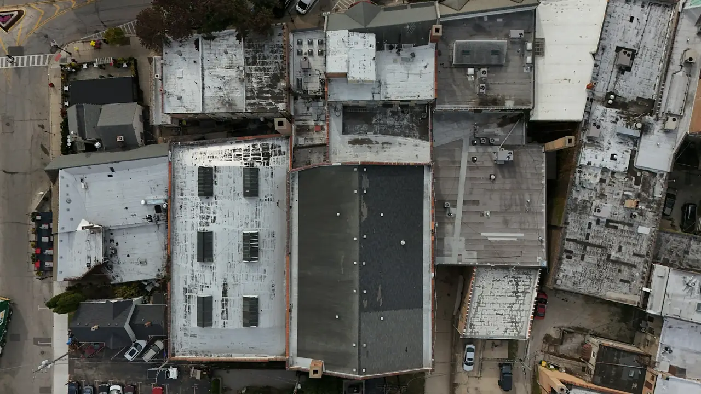

¡Aumente su albedo!
El cool roof: principio, ventajas y límites
Un cool roof, o cubierta fría, es una cubierta que se ha hecho muy reflectante y muy emisiva, casi siempre gracias a un revestimiento claro aplicado sobre la cubierta existente. Así funciona, esto es lo que dicen las mediciones y estos son los casos en los que resulta realmente útil.
El principio: devolver el sol en lugar de almacenarlo
Cuando el sol incide sobre una cubierta, una parte de la radiación se devuelve y el resto se absorbe y se transforma en calor. Ese calor atraviesa la cubierta y se difunde por el edificio, tanto más rápido cuanto menos aislado esté el tejado.
Un revestimiento cool roof actúa de dos maneras. Es muy reflectante: devuelve hacia el cielo la mayor parte de la radiación. También es muy emisivo: el calor que aun así ha captado se libera rápidamente en forma de radiación infrarroja, en lugar de acumularse en la cubierta.
El albedo, en la práctica
El albedo, o reflectancia solar, es la parte de la radiación solar que devuelve una superficie. Se mide de 0, cuando todo se absorbe, a 1, cuando todo se devuelve. Lo que no se devuelve se absorbe.
Modifique el albedo de la cubierta para ver qué parte de la radiación absorbe y dónde se sitúan las cubiertas habituales.
Albedo de la cubierta
Es el orden de magnitud de una cubierta tradicional oscura, que devuelve entre el 5 y el 15% de la radiación (US EPA).
- 0,05-0,15Cubierta tradicional oscura
- 0,20Cubierta gris
- 0,65 o másMateriales cool roof
- 0,80Cubierta blanca limpia
Reflectancia, emisividad, SRI: tres magnitudes que conviene conocer
Son las que figuran en las fichas técnicas de los revestimientos y en las condiciones de las ayudas.
- Reflectancia solar (albedo)
- Relación entre la radiación solar devuelta y la recibida, de 0 a 1. Cuanto más alta es, menos se calienta la superficie al sol.
- Emisividad térmica
- Capacidad de una superficie para liberar su calor en forma de radiación infrarroja, de 0 a 1. Los revestimientos cool roof tienen en general una emisividad de 0,80 a 0,90 o superior.
- Índice SRI
- El índice de reflectancia solar combina las dos magnitudes según la norma ASTM E1980. Vale 0 para un negro de referencia y 100 para un blanco de referencia. Los mejores revestimientos superan 100.
Lo que dicen las mediciones
Órdenes de magnitud procedentes de trabajos publicados, sobre todo en Estados Unidos, donde el cool roof se estudia desde hace tiempo.
- 5-15%Es la parte de la radiación solar que devuelve una cubierta tradicional, que por tanto absorbe entre el 85 y el 95% de la energía recibida. US EPA
- 66-85 °CTemperatura que puede alcanzar una cubierta tradicional en pleno verano. Una cubierta reflectante se mantiene entre 28 y 33 °C más fresca en las horas de más calor. US EPA
- 6-11 °CDiferencia habitual entre una cubierta reflectante y el aire ambiente, frente a 31-47 °C en una cubierta convencional. US EPA
- 30 °CDiferencia medida una tarde de verano entre una cubierta negra y una cubierta blanca. Lawrence Berkeley National Laboratory
- 2-40%Ahorro en climatización observado en una revisión de más de 25 estudios, un 20% de media, con reducciones del pico de demanda de entre el 14 y el 38%. US EPA
- 1,2-3,3 °CDescenso de la temperatura interior máxima observado en viviendas sin climatización. US EPA
Un mismo revestimiento da resultados muy distintos según el edificio. Entre los casos recopilados por la US EPA, una farmacia de San José, cuya cubierta ya dejaba pasar poco calor, solo ahorró un 2% en climatización: cuando entra poco calor por el tejado, hay poco que ganar.
¿Cuándo compensa el cool roof?
Un estudio realizado para la Federación Francesa de la Construcción comparó varios edificios y climas franceses. Sus conclusiones son claras: el interés depende ante todo del uso del edificio.
Balance favorable
- Edificios cuya climatización representa más del 30% de las necesidades, como muchos comercios y centros industriales
- Edificios climatizados y sin calefacción
- Edificios del sur de Francia
A estudiar
- Edificios sin climatización que se sobrecalientan en verano, como muchos almacenes y talleres
- Cubiertas poco o nada aisladas
- Climas templados con veranos cada vez más calurosos
Poco interés o a evitar
- Edificios sobre todo calefactados: con un 75% de necesidades de calefacción, el efecto es muy poco significativo
- Cubiertas con encharcamientos, en el caso de las pinturas reflectantes
- Soportes demasiado deteriorados, que hay que rehacer antes de cualquier revestimiento
El estudio también prevé mayores beneficios en el horizonte de 2050 en el escenario climático más pesimista del IPCC, sobre todo para los edificios terciarios e industriales. Calcule la rentabilidad para su edificio
¿Y en invierno?
Una cubierta reflectante también devuelve el sol de invierno, lo que puede aumentar un poco las necesidades de calefacción. Según la US EPA, en la mayoría de los climas estudiados esta penalización no anula el ahorro de verano.
Pesa más en las regiones frías, en los edificios muy calefactados. Por eso hacemos el balance de verano e invierno antes de proponer un cool roof, en particular en zonas de montaña o en las regiones más septentrionales.
En verano
Sol alto, días largos: la cubierta recibe la mayor parte del aporte solar del año.
En invierno
Sol bajo, días cortos, cielo a menudo cubierto: el aporte a través de la cubierta es pequeño.
Vida útil y mantenimiento
Bien aplicados, muchos revestimientos cool roof han durado más de veinte años. Una aplicación mal preparada, en cambio, puede pelarse o descamarse en pocos años: la preparación del soporte cuenta tanto como el producto.
La reflectancia disminuye sobre todo el primer año, por la suciedad, alrededor de un 20% con un mantenimiento correcto. Las superficies lisas e inclinadas se ensucian menos. Una limpieza según las recomendaciones del fabricante ayuda a recuperar el rendimiento.
La Federación Francesa de la Construcción recomienda entregar al propietario una ficha de mantenimiento al final de las obras y proponer un contrato de mantenimiento anual. Es lo que hacemos.
- Soporte limpio, reparado y seco antes de la aplicación
- Rangos de temperatura y humedad del fabricante respetados
- Espesores y consumos de producto controlados
- Ficha de mantenimiento y contrato de mantenimiento propuestos
Más allá del edificio: las islas de calor
En algunas ciudades estadounidenses, las cubiertas y las calzadas representan más del 60% de las superficies. Oscuras y secas, absorben el sol y calientan el aire: es el efecto isla de calor urbana, que agrava las olas de calor y aumenta las necesidades de climatización.
Las cubiertas más claras contribuyen menos a ello. Un estudio británico citado por la US EPA estima que, a escala de una ciudad, las cubiertas reflectantes podrían compensar el 18% de la mortalidad relacionada con la isla de calor.

Fuentes
- US EPA, Reducing Urban Heat Islands: Compendium of Strategies, Cool Roofs (en inglés). epa.gov
- US EPA, Using Cool Roofs to Reduce Heat Islands (en inglés). epa.gov
- Lawrence Berkeley National Laboratory, Heat Island Group, Cool Roofs (en inglés). heatisland.lbl.gov
- Federación Francesa de la Construcción (FFB), Cool roofing : ce qu’il faut savoir (estudio de Pouget Consultants, en francés). ffbatiment.fr